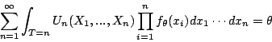

Var(Un)1/(n*I(θ)).
| [Stat Inf II classnotes, ISI, Kolkata] |
X1,...,Xnfrom some distribution involving a real-valued parameter θ. We assume that the "usual regularity conditions" hold. Let I(θ) denote Fisher's Information per observation.
Theorem:
(Fixed sample size Cramer-Rao bound)
If Un is any unbiased estimator of θ based on the
sample of size n, then
Var(Un) |
Theorem:
(Sequential Cramer-Rao bound)
Let UT be some sequential unbiased estimator of θ based
on stopping time T. We assume E(T) is finite. Then
Var(UT) |
Proof:
Shall do a bit later.

|
|
Example:
(Haldane's inverse sampling)
Suppose that we have a population of objects each of which belongs to
exactly one of two classes: A and not-A. The proportion of A's in the
population is θ, the unknown parameter that we want to
estimate.
One simple approach is to draw a sample of size n, and estimate θ by the proportion of A's in the sample. But if θ is too small then we may not have any A at all in the sample, producing poor estimate of θ. Haldane proposed the following sampling scheme to cope with this situation. It is called inverse sampling: Go on sampling the objects with replacement until you get an A. This is a stopping time. Call it T. Then use 1/T to estimate θ. |
| Exercise CR1.1: Work out the distribution of T. Hence show that 1/T is biased for θ. |
|
Exercise CR1.2:
Show that T is unbiased for 1/θ.
[Hint: You may do it either directly, or by using Wald's first equality. ] |
1}. If for a
given sequence we stop at T=n, then we apply Un.
As for any estimator, we call UT an unbiased estimator of θ, if
E(UT) = θ.
|
Exercise CR1.3:
Suppose that the density of the X's is fθ(x).
Then show that
UT is unbiased for θ if and only if
 for all θ. |
W = d log(fθ(X))/d θNotice that
E(W2) = I(θ).Define, for all n,
Vn =W1+...+Wn.
Exercise CR1.3:
Show that
for all θ.
|
| Exercise CR1.5: Show by assuming suitable regularity conditions that E(W)=0. |
Exercise CR1.6:
Show that
|
Exercise CR1.7:
Show that
|
|
Exercise CR1.8:
Use (1), (2) and (3) above to complete the proof.
[Hint: Use Cauchy-Schwartz inequality. ] |
Exercise CR1.9:
Consider Haldane's inverse sampling method. Let us use
UT = Tto estimate 1/θ. Show that UT attains the CR bound. [Hint: Enough to show that equality holds in the CS inequality used in the proof above. ] |